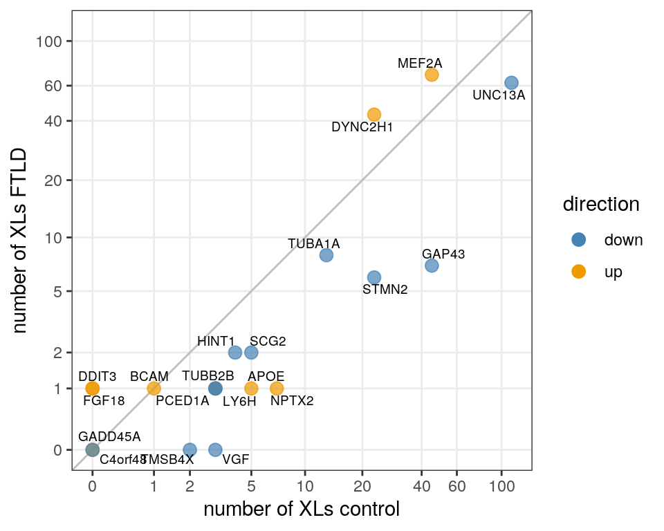

Last updated: 2021-07-16
Checks: 7 0
Knit directory: neural_scRNAseq/
This reproducible R Markdown analysis was created with workflowr (version 1.6.2). The Checks tab describes the reproducibility checks that were applied when the results were created. The Past versions tab lists the development history.
Great! Since the R Markdown file has been committed to the Git repository, you know the exact version of the code that produced these results.
Great job! The global environment was empty. Objects defined in the global environment can affect the analysis in your R Markdown file in unknown ways. For reproduciblity it's best to always run the code in an empty environment.
The command set.seed(20200522) was run prior to running the code in the R Markdown file. Setting a seed ensures that any results that rely on randomness, e.g. subsampling or permutations, are reproducible.
Great job! Recording the operating system, R version, and package versions is critical for reproducibility.
Nice! There were no cached chunks for this analysis, so you can be confident that you successfully produced the results during this run.
Great job! Using relative paths to the files within your workflowr project makes it easier to run your code on other machines.
Great! You are using Git for version control. Tracking code development and connecting the code version to the results is critical for reproducibility.
The results in this page were generated with repository version 2f2aeba. See the Past versions tab to see a history of the changes made to the R Markdown and HTML files.
Note that you need to be careful to ensure that all relevant files for the analysis have been committed to Git prior to generating the results (you can use wflow_publish or wflow_git_commit). workflowr only checks the R Markdown file, but you know if there are other scripts or data files that it depends on. Below is the status of the Git repository when the results were generated:
Ignored files:
Ignored: .DS_Store
Ignored: .Rhistory
Ignored: .Rproj.user/
Ignored: ._.DS_Store
Ignored: ._Filtered.pdf
Ignored: ._Rplots.pdf
Ignored: ._Unfiltered.pdf
Ignored: .__workflowr.yml
Ignored: ._coverage.pdf
Ignored: ._coverage_sashimi.pdf
Ignored: ._coverage_sashimi.png
Ignored: ._iCLIP_nrXLs_markers.pdf
Ignored: ._neural_scRNAseq.Rproj
Ignored: ._pbDS_cell_level.pdf
Ignored: ._pbDS_top_expr_umap.pdf
Ignored: ._pbDS_upset.pdf
Ignored: ._sashimi.pdf
Ignored: ._stmn2.pdf
Ignored: ._tdp.pdf
Ignored: analysis/.DS_Store
Ignored: analysis/.Rhistory
Ignored: analysis/._.DS_Store
Ignored: analysis/._01-preprocessing.Rmd
Ignored: analysis/._01-preprocessing.html
Ignored: analysis/._02.1-SampleQC.Rmd
Ignored: analysis/._03-filtering.Rmd
Ignored: analysis/._04-clustering.Rmd
Ignored: analysis/._04-clustering.knit.md
Ignored: analysis/._04.1-cell_cycle.Rmd
Ignored: analysis/._05-annotation.Rmd
Ignored: analysis/._07-cluster-analysis-all-timepoints.Rmd
Ignored: analysis/._Lam-0-NSC_no_integration.Rmd
Ignored: analysis/._Lam-01-NSC_integration.Rmd
Ignored: analysis/._Lam-02-NSC_annotation.Rmd
Ignored: analysis/._NSC-1-clustering.Rmd
Ignored: analysis/._NSC-2-annotation.Rmd
Ignored: analysis/._TDP-06-cluster_analysis.Rmd
Ignored: analysis/.__site.yml
Ignored: analysis/._additional_filtering.Rmd
Ignored: analysis/._additional_filtering_clustering.Rmd
Ignored: analysis/._index.Rmd
Ignored: analysis/._organoid-01-1-qualtiy-control.Rmd
Ignored: analysis/._organoid-01-clustering.Rmd
Ignored: analysis/._organoid-02-integration.Rmd
Ignored: analysis/._organoid-03-cluster_analysis.Rmd
Ignored: analysis/._organoid-04-group_integration.Rmd
Ignored: analysis/._organoid-04-stage_integration.Rmd
Ignored: analysis/._organoid-05-group_integration_cluster_analysis.Rmd
Ignored: analysis/._organoid-05-stage_integration_cluster_analysis.Rmd
Ignored: analysis/._organoid-06-1-prepare-sce.Rmd
Ignored: analysis/._organoid-06-conos-analysis-Seurat.Rmd
Ignored: analysis/._organoid-06-conos-analysis-function.Rmd
Ignored: analysis/._organoid-06-conos-analysis.Rmd
Ignored: analysis/._organoid-06-group-integration-conos-analysis.Rmd
Ignored: analysis/._organoid-07-conos-visualization.Rmd
Ignored: analysis/._organoid-07-group-integration-conos-visualization.Rmd
Ignored: analysis/._organoid-08-conos-comparison.Rmd
Ignored: analysis/._organoid-0x-sample_integration.Rmd
Ignored: analysis/01-preprocessing_cache/
Ignored: analysis/02-1-SampleQC_cache/
Ignored: analysis/02-quality_control_cache/
Ignored: analysis/02.1-SampleQC_cache/
Ignored: analysis/03-filtering_cache/
Ignored: analysis/04-clustering_cache/
Ignored: analysis/04.1-cell_cycle_cache/
Ignored: analysis/05-annotation_cache/
Ignored: analysis/06-clustering-all-timepoints_cache/
Ignored: analysis/07-cluster-analysis-all-timepoints_cache/
Ignored: analysis/CH-test-01-preprocessing_cache/
Ignored: analysis/CH-test-02-transgene-expression_cache/
Ignored: analysis/CH-test-03-cluster-analysis_cache/
Ignored: analysis/Lam-01-NSC_integration_cache/
Ignored: analysis/Lam-02-NSC_annotation_cache/
Ignored: analysis/NSC-1-clustering_cache/
Ignored: analysis/NSC-2-annotation_cache/
Ignored: analysis/TDP-01-preprocessing_cache/
Ignored: analysis/TDP-02-quality_control_cache/
Ignored: analysis/TDP-03-filtering_cache/
Ignored: analysis/TDP-04-clustering_cache/
Ignored: analysis/TDP-05-00-filtering-plasmid-QC_cache/
Ignored: analysis/TDP-05-plasmid_expression_cache/
Ignored: analysis/TDP-06-cluster_analysis_cache/
Ignored: analysis/TDP-07-01-STMN2_expression_cache/
Ignored: analysis/TDP-07-02-Prudencio_marker_expression_cache/
Ignored: analysis/TDP-07-03-Liu_sorted_nuclei_marker_expression_cache/
Ignored: analysis/TDP-07-cluster_12_cache/
Ignored: analysis/TDP-08-00-clustering-HA-D96_cache/
Ignored: analysis/TDP-08-01-HA-D96-expression-changes_cache/
Ignored: analysis/TDP-08-02-TDP_target_genes_cache/
Ignored: analysis/TDP-08-clustering-timeline-HA_cache/
Ignored: analysis/additional_filtering_cache/
Ignored: analysis/additional_filtering_clustering_cache/
Ignored: analysis/organoid-01-1-qualtiy-control_cache/
Ignored: analysis/organoid-01-clustering_cache/
Ignored: analysis/organoid-02-integration_cache/
Ignored: analysis/organoid-03-cluster_analysis_cache/
Ignored: analysis/organoid-04-group_integration_cache/
Ignored: analysis/organoid-04-stage_integration_cache/
Ignored: analysis/organoid-05-group_integration_cluster_analysis_cache/
Ignored: analysis/organoid-05-stage_integration_cluster_analysis_cache/
Ignored: analysis/organoid-06-conos-analysis_cache/
Ignored: analysis/organoid-06-conos-analysis_test_cache/
Ignored: analysis/organoid-06-group-integration-conos-analysis_cache/
Ignored: analysis/organoid-07-conos-visualization_cache/
Ignored: analysis/organoid-07-group-integration-conos-visualization_cache/
Ignored: analysis/organoid-08-conos-comparison_cache/
Ignored: analysis/organoid-0x-sample_integration_cache/
Ignored: analysis/sample5_QC_cache/
Ignored: analysis/timepoints-01-organoid-integration_cache/
Ignored: analysis/timepoints-02-cluster-analysis_cache/
Ignored: data/.DS_Store
Ignored: data/._.DS_Store
Ignored: data/._.smbdeleteAAA17ed8b4b
Ignored: data/._Lam_figure2_markers.R
Ignored: data/._README.md
Ignored: data/._Reactive_astrocytes_markers.xlsx
Ignored: data/._known_NSC_markers.R
Ignored: data/._known_cell_type_markers.R
Ignored: data/._metadata.csv
Ignored: data/._virus_cell_tropism_markers.R
Ignored: data/._~$Reactive_astrocytes_markers.xlsx
Ignored: data/data_sushi/
Ignored: data/filtered_feature_matrices/
Ignored: output/.DS_Store
Ignored: output/._.DS_Store
Ignored: output/._Liu_TDP_neg_vs_pos_edgeR_dge_results.txt
Ignored: output/._NSC_cluster2_marker_genes.txt
Ignored: output/._TDP-06-no_integration_cluster12_marker_genes.txt
Ignored: output/._TDP-06-no_integration_cluster13_marker_genes.txt
Ignored: output/._organoid_integration_cluster1_marker_genes.txt
Ignored: output/._tbl_TDP-08-01-muscat_cluster_0.txt
Ignored: output/._tbl_TDP-08-01-muscat_cluster_1.txt
Ignored: output/._tbl_TDP-08-01-muscat_cluster_10.txt
Ignored: output/._tbl_TDP-08-01-muscat_cluster_11.txt
Ignored: output/._tbl_TDP-08-01-muscat_cluster_12.txt
Ignored: output/._tbl_TDP-08-01-muscat_cluster_13.txt
Ignored: output/._tbl_TDP-08-01-muscat_cluster_14.txt
Ignored: output/._tbl_TDP-08-01-muscat_cluster_5.txt
Ignored: output/._tbl_TDP-08-01-muscat_cluster_7.txt
Ignored: output/._tbl_TDP-08-01-muscat_cluster_8.txt
Ignored: output/._tbl_TDP-08-01-muscat_cluster_all.xlsx
Ignored: output/._tbl_TDP-08-02-targets_hek_cluster_0.txt
Ignored: output/._tbl_TDP-08-02-targets_hek_cluster_1.txt
Ignored: output/._tbl_TDP-08-02-targets_hek_cluster_10.txt
Ignored: output/._tbl_TDP-08-02-targets_hek_cluster_11.txt
Ignored: output/._tbl_TDP-08-02-targets_hek_cluster_12.txt
Ignored: output/._tbl_TDP-08-02-targets_hek_cluster_13.txt
Ignored: output/._tbl_TDP-08-02-targets_hek_cluster_14.txt
Ignored: output/._tbl_TDP-08-02-targets_hek_cluster_5.txt
Ignored: output/._tbl_TDP-08-02-targets_hek_cluster_7.txt
Ignored: output/._tbl_TDP-08-02-targets_hek_cluster_8.txt
Ignored: output/._tbl_TDP-08-02-targets_hek_cluster_all.xlsx
Ignored: output/._~$tbl_TDP-08-02-targets_hek_cluster_all.xlsx
Ignored: output/CH-test-01-preprocessing.rds
Ignored: output/CH-test-01-preprocessing_singlets.rds
Ignored: output/CH-test-01-preprocessing_singlets_filtered.rds
Ignored: output/CH-test-01-preprocessing_so.rds
Ignored: output/CH-test-01-preprocessing_so_filtered.rds
Ignored: output/CH-test-03-cluster-analysis_so.rds
Ignored: output/CH-test-03_scran_markers.rds
Ignored: output/Lam-01-clustering.rds
Ignored: output/Liu_TDP_neg_vs_pos_edgeR_dge.rds
Ignored: output/Liu_TDP_neg_vs_pos_edgeR_dge_results.txt
Ignored: output/NSC_1_clustering.rds
Ignored: output/NSC_cluster1_marker_genes.txt
Ignored: output/NSC_cluster2_marker_genes.txt
Ignored: output/NSC_cluster3_marker_genes.txt
Ignored: output/NSC_cluster4_marker_genes.txt
Ignored: output/NSC_cluster5_marker_genes.txt
Ignored: output/NSC_cluster6_marker_genes.txt
Ignored: output/NSC_cluster7_marker_genes.txt
Ignored: output/TDP-06-no_integration_cluster0_marker_genes.txt
Ignored: output/TDP-06-no_integration_cluster10_marker_genes.txt
Ignored: output/TDP-06-no_integration_cluster11_marker_genes.txt
Ignored: output/TDP-06-no_integration_cluster12_marker_genes.txt
Ignored: output/TDP-06-no_integration_cluster13_marker_genes.txt
Ignored: output/TDP-06-no_integration_cluster14_marker_genes.txt
Ignored: output/TDP-06-no_integration_cluster15_marker_genes.txt
Ignored: output/TDP-06-no_integration_cluster16_marker_genes.txt
Ignored: output/TDP-06-no_integration_cluster17_marker_genes.txt
Ignored: output/TDP-06-no_integration_cluster1_marker_genes.txt
Ignored: output/TDP-06-no_integration_cluster2_marker_genes.txt
Ignored: output/TDP-06-no_integration_cluster3_marker_genes.txt
Ignored: output/TDP-06-no_integration_cluster4_marker_genes.txt
Ignored: output/TDP-06-no_integration_cluster5_marker_genes.txt
Ignored: output/TDP-06-no_integration_cluster6_marker_genes.txt
Ignored: output/TDP-06-no_integration_cluster7_marker_genes.txt
Ignored: output/TDP-06-no_integration_cluster8_marker_genes.txt
Ignored: output/TDP-06-no_integration_cluster9_marker_genes.txt
Ignored: output/TDP-06_scran_markers.rds
Ignored: output/additional_filtering.rds
Ignored: output/conos/
Ignored: output/conos_organoid-06-conos-analysis.rds
Ignored: output/conos_organoid-06-group-integration-conos-analysis.rds
Ignored: output/figures/
Ignored: output/organoid_integration_cluster10_marker_genes.txt
Ignored: output/organoid_integration_cluster11_marker_genes.txt
Ignored: output/organoid_integration_cluster12_marker_genes.txt
Ignored: output/organoid_integration_cluster13_marker_genes.txt
Ignored: output/organoid_integration_cluster14_marker_genes.txt
Ignored: output/organoid_integration_cluster15_marker_genes.txt
Ignored: output/organoid_integration_cluster16_marker_genes.txt
Ignored: output/organoid_integration_cluster17_marker_genes.txt
Ignored: output/organoid_integration_cluster1_marker_genes.txt
Ignored: output/organoid_integration_cluster2_marker_genes.txt
Ignored: output/organoid_integration_cluster3_marker_genes.txt
Ignored: output/organoid_integration_cluster4_marker_genes.txt
Ignored: output/organoid_integration_cluster5_marker_genes.txt
Ignored: output/organoid_integration_cluster6_marker_genes.txt
Ignored: output/organoid_integration_cluster7_marker_genes.txt
Ignored: output/organoid_integration_cluster8_marker_genes.txt
Ignored: output/organoid_integration_cluster9_marker_genes.txt
Ignored: output/paper_supplement/
Ignored: output/res_TDP-08-01-muscat.rds
Ignored: output/sce_01_preprocessing.rds
Ignored: output/sce_02_quality_control.rds
Ignored: output/sce_03_filtering.rds
Ignored: output/sce_03_filtering_all_genes.rds
Ignored: output/sce_06-1-prepare-sce.rds
Ignored: output/sce_TDP-08-01-muscat.rds
Ignored: output/sce_TDP_01_preprocessing.rds
Ignored: output/sce_TDP_02_quality_control.rds
Ignored: output/sce_TDP_03_filtering.rds
Ignored: output/sce_TDP_03_filtering_all_genes.rds
Ignored: output/sce_organoid-01-clustering.rds
Ignored: output/sce_preprocessing.rds
Ignored: output/so_04-stage_integration.rds
Ignored: output/so_04_1_cell_cycle.rds
Ignored: output/so_04_clustering.rds
Ignored: output/so_06-clustering_all_timepoints.rds
Ignored: output/so_08-00_clustering_HA_D96.rds
Ignored: output/so_08-clustering_timeline_HA.rds
Ignored: output/so_0x-sample_integration.rds
Ignored: output/so_CH-test-02-transgene_expression.rds
Ignored: output/so_TDP-06-cluster-analysis.rds
Ignored: output/so_TDP_04_clustering.rds
Ignored: output/so_TDP_05_plasmid_expression.rds
Ignored: output/so_additional_filtering_clustering.rds
Ignored: output/so_integrated_organoid-02-integration.rds
Ignored: output/so_merged_organoid-02-integration.rds
Ignored: output/so_organoid-01-clustering.rds
Ignored: output/so_sample_organoid-01-clustering.rds
Ignored: output/so_timepoints-01-organoid_integration.rds
Ignored: output/tbl_TDP-08-01-muscat.rds
Ignored: output/tbl_TDP-08-01-muscat_cluster_0.txt
Ignored: output/tbl_TDP-08-01-muscat_cluster_1.txt
Ignored: output/tbl_TDP-08-01-muscat_cluster_10.txt
Ignored: output/tbl_TDP-08-01-muscat_cluster_11.txt
Ignored: output/tbl_TDP-08-01-muscat_cluster_12.txt
Ignored: output/tbl_TDP-08-01-muscat_cluster_13.txt
Ignored: output/tbl_TDP-08-01-muscat_cluster_14.txt
Ignored: output/tbl_TDP-08-01-muscat_cluster_5.txt
Ignored: output/tbl_TDP-08-01-muscat_cluster_7.txt
Ignored: output/tbl_TDP-08-01-muscat_cluster_8.txt
Ignored: output/tbl_TDP-08-01-muscat_cluster_all.xlsx
Ignored: output/tbl_TDP-08-02-targets_hek.rds
Ignored: output/tbl_TDP-08-02-targets_hek_cluster_0.txt
Ignored: output/tbl_TDP-08-02-targets_hek_cluster_1.txt
Ignored: output/tbl_TDP-08-02-targets_hek_cluster_10.txt
Ignored: output/tbl_TDP-08-02-targets_hek_cluster_11.txt
Ignored: output/tbl_TDP-08-02-targets_hek_cluster_12.txt
Ignored: output/tbl_TDP-08-02-targets_hek_cluster_13.txt
Ignored: output/tbl_TDP-08-02-targets_hek_cluster_14.txt
Ignored: output/tbl_TDP-08-02-targets_hek_cluster_5.txt
Ignored: output/tbl_TDP-08-02-targets_hek_cluster_7.txt
Ignored: output/tbl_TDP-08-02-targets_hek_cluster_8.txt
Ignored: output/tbl_TDP-08-02-targets_hek_cluster_all.xlsx
Ignored: output/~$tbl_TDP-08-02-targets_hek_cluster_all.xlsx
Ignored: scripts/.DS_Store
Ignored: scripts/._.DS_Store
Ignored: scripts/._bu_Rcode.R
Ignored: scripts/._plasmid_expression.sh
Ignored: scripts/._plasmid_expression_cell_hashing_test.sh
Ignored: scripts/._prepare_salmon_transcripts.R
Ignored: scripts/._prepare_salmon_transcripts_cell_hashing_test.R
Untracked files:
Untracked: Filtered.pdf
Untracked: Rplots.pdf
Untracked: Unfiltered
Untracked: Unfiltered.pdf
Untracked: analysis/Lam-0-NSC_no_integration.Rmd
Untracked: analysis/TDP-07-01-STMN2_expression copy.Rmd
Untracked: analysis/additional_filtering.Rmd
Untracked: analysis/additional_filtering_clustering.Rmd
Untracked: analysis/organoid-01-1-qualtiy-control.Rmd
Untracked: analysis/organoid-06-conos-analysis-Seurat.Rmd
Untracked: analysis/organoid-06-conos-analysis-function.Rmd
Untracked: analysis/organoid-07-conos-visualization.Rmd
Untracked: analysis/organoid-07-group-integration-conos-visualization.Rmd
Untracked: analysis/organoid-08-conos-comparison.Rmd
Untracked: analysis/organoid-0x-sample_integration.Rmd
Untracked: analysis/sample5_QC.Rmd
Untracked: coverage.pdf
Untracked: coverage_sashimi.pdf
Untracked: coverage_sashimi.png
Untracked: data/Homo_sapiens.GRCh38.98.sorted.gtf
Untracked: data/Jun2021/
Untracked: data/Kanton_et_al/
Untracked: data/Lam_et_al/
Untracked: data/Liu_et_al/
Untracked: data/Prudencio_et_al/
Untracked: data/Sep2020/
Untracked: data/cell_hashing_test/
Untracked: data/reference/
Untracked: data/virus_cell_tropism_markers.R
Untracked: data/~$Reactive_astrocytes_markers.xlsx
Untracked: iCLIP_nrXLs_markers.pdf
Untracked: pbDS_cell_level.pdf
Untracked: pbDS_heatmap.pdf
Untracked: pbDS_top_expr_umap.pdf
Untracked: pbDS_upset.pdf
Untracked: sashimi.pdf
Untracked: scripts/bu_Rcode.R
Untracked: scripts/bu_code.Rmd
Untracked: scripts/plasmid_expression_cell_hashing_test.sh
Untracked: scripts/prepare_salmon_transcripts_cell_hashing_test.R
Untracked: scripts/salmon-latest_linux_x86_64/
Untracked: stmn2.pdf
Untracked: tdp.pdf
Unstaged changes:
Modified: analysis/05-annotation.Rmd
Modified: analysis/TDP-04-clustering.Rmd
Modified: analysis/TDP-07-01-STMN2_expression.Rmd
Modified: analysis/TDP-07-cluster_12.Rmd
Modified: analysis/TDP-08-01-HA-D96-expression-changes.Rmd
Modified: analysis/_site.yml
Modified: analysis/organoid-02-integration.Rmd
Modified: analysis/organoid-04-group_integration.Rmd
Modified: analysis/organoid-06-conos-analysis.Rmd
Note that any generated files, e.g. HTML, png, CSS, etc., are not included in this status report because it is ok for generated content to have uncommitted changes.
These are the previous versions of the repository in which changes were made to the R Markdown (analysis/TDP-07-04-Tollervey_marker_binding.Rmd) and HTML (docs/TDP-07-04-Tollervey_marker_binding.html) files. If you've configured a remote Git repository (see ?wflow_git_remote), click on the hyperlinks in the table below to view the files as they were in that past version.
| File | Version | Author | Date | Message |
|---|---|---|---|---|
| Rmd | 2f2aeba | khembach | 2021-07-16 | remove warnings |
| html | 7ef4e44 | khembach | 2021-07-16 | Build site. |
| Rmd | 6e341e8 | khembach | 2021-07-16 | color labels and increase font |
| html | ac970e2 | khembach | 2021-07-14 | Build site. |
| Rmd | b774264 | khembach | 2021-07-14 | remove warnings |
| html | f29be14 | khembach | 2021-07-14 | Build site. |
| Rmd | 281d60d | khembach | 2021-07-14 | change alpha of points |
| html | d217260 | khembach | 2021-07-14 | Build site. |
| Rmd | 68c7a6e | khembach | 2021-07-14 | binding of cluster 12 marker genes in iCLIP data from controls and FTLD |
library(rtracklayer)
library(dplyr)
library(BSgenome.Hsapiens.UCSC.hg38)
library(GenomicFeatures)
library(ggrepel)dat_dir <- file.path("/home", "kathi", "tollervey_iCLIP")
gtf_file <- file.path("data", "Homo_sapiens.GRCh38.98.sorted.gtf")
gtf <- import(gtf_file)
genes <- gtf[gtf$type =="gene"]
genome <- BSgenome.Hsapiens.UCSC.hg38
xls <- list(control = import(file.path(dat_dir, "analysis", "merged_repl",
"xls_merged_control.bed")),
FTLD = import(file.path(dat_dir, "analysis", "merged_repl",
"xls_merged_FTLD.bed")))Marker lists:
markers <- list(up = c("NPTX2", "FGF18", "PCED1A", "MEF2A", "DYNC2H1",
"APOE", "GADD45A", "BCAM", "DDIT3"),
down = c("VGF", "SCG2", "GAP43", "C4orf48", "HINT1", "LY6H",
"TUBA1A", "TMSB4X", "TUBB2B", "STMN2", "UNC13A"))What is the difference in the number of XL sites in cluster 12 marker genes?
df <- data.frame(gene = c(markers[["up"]], markers[["down"]]),
direction = c(rep("up", length(markers[["up"]])),
rep("down", length(markers[["down"]]))))
olaps <- sapply(df$gene, function(x) {
g <- genes[genes$gene_name == x]
res <- c(countOverlaps(g ,xls[["control"]]), countOverlaps(g, xls[["FTLD"]]))
names(res) <- c("control", "FTLD")
res
})
df$control <- olaps["control", ]
df$FTLD <- olaps["FTLD", ]
df gene direction control FTLD
1 NPTX2 up 7 1
2 FGF18 up 0 1
3 PCED1A up 3 1
4 MEF2A up 45 68
5 DYNC2H1 up 23 43
6 APOE up 5 1
7 GADD45A up 0 0
8 BCAM up 1 1
9 DDIT3 up 0 1
10 VGF down 3 0
11 SCG2 down 5 2
12 GAP43 down 45 7
13 C4orf48 down 0 0
14 HINT1 down 4 2
15 LY6H down 3 1
16 TUBA1A down 13 8
17 TMSB4X down 2 0
18 TUBB2B down 3 1
19 STMN2 down 23 6
20 UNC13A down 112 62ggplot(df, aes(x = control + 1, y = FTLD + 1, color = direction, label = gene)) +
geom_abline(intercept = 0, slope = 1, color = "grey") +
geom_point(size = 3, alpha = 0.6) +
geom_text_repel(force = 2.5, size = 3) +
theme_bw() +
scale_x_log10(breaks=c(1, 2, 3, 6, 11, 21, 41, 61, 101),
labels=c("0", "1", "2", "5", "10", "20", "40", "60", "100"),
limits = c(1, max(df$control, df$FTLD)+1)) +
scale_y_log10(breaks=c(1, 2, 3, 6, 11, 21, 41, 61, 101),
labels=c("0", "1", "2", "5", "10", "20", "40", "60", "100"),
limits = c(1, max(df$control, df$FTLD)+1)) +
theme(panel.grid.minor = element_blank()) +
coord_fixed() +
scale_color_manual(values = c("steelblue", "orange2")) +
xlab("number of XLs control") +
ylab("number of XLs FTLD") +
guides(colour = guide_legend(override.aes = list(alpha = 1)))
Where are the UG repeats located in NPTX2?
target <- genes[genes$gene_name == "NPTX2"]
seqlevelsStyle(target) <- "UCSC"
seq <- getSeq(genome, target)[[1]]Warning in .Seqinfo.mergexy(x, y): Each of the 2 combined objects has sequence levels not in the other:
- in 'x': chr1_GL383518v1_alt, chr1_GL383519v1_alt, chr1_GL383520v2_alt, chr1_KI270759v1_alt, chr1_KI270760v1_alt, chr1_KI270761v1_alt, chr1_KI270762v1_alt, chr1_KI270763v1_alt, chr1_KI270764v1_alt, chr1_KI270765v1_alt, chr1_KI270766v1_alt, chr1_KI270892v1_alt, chr2_GL383521v1_alt, chr2_GL383522v1_alt, chr2_GL582966v2_alt, chr2_KI270767v1_alt, chr2_KI270768v1_alt, chr2_KI270769v1_alt, chr2_KI270770v1_alt, chr2_KI270771v1_alt, chr2_KI270772v1_alt, chr2_KI270773v1_alt, chr2_KI270774v1_alt, chr2_KI270775v1_alt, chr2_KI270776v1_alt, chr2_KI270893v1_alt, chr2_KI270894v1_alt, chr3_GL383526v1_alt, chr3_JH636055v2_alt, chr3_KI270777v1_alt, chr3_KI270778v1_alt, chr3_KI270779v1_alt, chr3_KI270780v1_alt, chr3_KI270781v1_alt, chr3_KI270782v1_alt, chr3_KI270783v1_alt, chr3_KI270784v1_alt, chr3_KI270895v1_alt, chr3_KI270924v1_alt, chr3_KI270934v1_alt, chr3_KI270935v1_alt, chr3_KI270936v1_alt, chr3_KI270937v1_alt, chr4_GL000257v2_alt, chr4_GL383527v1_alt, chr4_GL383528v1_alt, chr4_KI270785v1_alt, chr4_KI270786v1_alt, chr4_KI270787v1_alt, chr4_KI270788v1_alt, chr4_KI270789v1_alt, chr4_KI270790v1_alt, chr4_KI270896v1_alt, chr4_KI270925v1_alt, chr5_GL339449v2_alt, chr5_GL383530v1_alt, chr5_GL383531v1_alt, chr5_GL383532v1_alt, chr5_GL949742v1_alt, chr5_KI270791v1_alt, chr5_KI270792v1_alt, chr5_KI270793v1_alt, chr5_KI270794v1_alt, chr5_KI270795v1_alt, chr5_KI270796v1_alt, chr5_KI270897v1_alt, chr5_KI270898v1_alt, chr6_GL000250v2_alt, chr6_GL000251v2_alt, chr6_GL000252v2_alt, chr6_GL000253v2_alt, chr6_GL000254v2_alt, chr6_GL000255v2_alt, chr6_GL000256v2_alt, chr6_GL383533v1_alt, chr6_KB021644v2_alt, chr6_KI270758v1_alt, chr6_KI270797v1_alt, chr6_KI270798v1_alt, chr6_KI270799v1_alt, chr6_KI270800v1_alt, chr6_KI270801v1_alt, chr6_KI270802v1_alt, chr7_GL383534v2_alt, chr7_KI270803v1_alt, chr7_KI270804v1_alt, chr7_KI270805v1_alt, chr7_KI270806v1_alt, chr7_KI270807v1_alt, chr7_KI270808v1_alt, chr7_KI270809v1_alt, chr7_KI270899v1_alt, chr8_KI270810v1_alt, chr8_KI270811v1_alt, chr8_KI270812v1_alt, chr8_KI270813v1_alt, chr8_KI270814v1_alt, chr8_KI270815v1_alt, chr8_KI270816v1_alt, chr8_KI270817v1_alt, chr8_KI270818v1_alt, chr8_KI270819v1_alt, chr8_KI270820v1_alt, chr8_KI270821v1_alt, chr8_KI270822v1_alt, chr8_KI270900v1_alt, chr8_KI270901v1_alt, chr8_KI270926v1_alt, chr9_GL383539v1_alt, chr9_GL383540v1_alt, chr9_GL383541v1_alt, chr9_GL383542v1_alt, chr9_KI270823v1_alt, chr10_GL383545v1_alt, chr10_GL383546v1_alt, chr10_KI270824v1_alt, chr10_KI270825v1_alt, chr11_GL383547v1_alt, chr11_JH159136v1_alt, chr11_JH159137v1_alt, chr11_KI270826v1_alt, chr11_KI270827v1_alt, chr11_KI270829v1_alt, chr11_KI270830v1_alt, chr11_KI270831v1_alt, chr11_KI270832v1_alt, chr11_KI270902v1_alt, chr11_KI270903v1_alt, chr11_KI270927v1_alt, chr12_GL383549v1_alt, chr12_GL383550v2_alt, chr12_GL383551v1_alt, chr12_GL383552v1_alt, chr12_GL383553v2_alt, chr12_GL877875v1_alt, chr12_GL877876v1_alt, chr12_KI270833v1_alt, chr12_KI270834v1_alt, chr12_KI270835v1_alt, chr12_KI270836v1_alt, chr12_KI270837v1_alt, chr12_KI270904v1_alt, chr13_KI270838v1_alt, chr13_KI270839v1_alt, chr13_KI270840v1_alt, chr13_KI270841v1_alt, chr13_KI270842v1_alt, chr13_KI270843v1_alt, chr14_KI270844v1_alt, chr14_KI270845v1_alt, chr14_KI270846v1_alt, chr14_KI270847v1_alt, chr15_GL383554v1_alt, chr15_GL383555v2_alt, chr15_KI270848v1_alt, chr15_KI270849v1_alt, chr15_KI270850v1_alt, chr15_KI270851v1_alt, chr15_KI270852v1_alt, chr15_KI270905v1_alt, chr15_KI270906v1_alt, chr16_GL383556v1_alt, chr16_GL383557v1_alt, chr16_KI270853v1_alt, chr16_KI270854v1_alt, chr16_KI270855v1_alt, chr16_KI270856v1_alt, chr17_GL000258v2_alt, chr17_GL383563v3_alt, chr17_GL383564v2_alt, chr17_GL383565v1_alt, chr17_GL383566v1_alt, chr17_JH159146v1_alt, chr17_JH159147v1_alt, chr17_JH159148v1_alt, chr17_KI270857v1_alt, chr17_KI270858v1_alt, chr17_KI270859v1_alt, chr17_KI270860v1_alt, chr17_KI270861v1_alt, chr17_KI270862v1_alt, chr17_KI270907v1_alt, chr17_KI270908v1_alt, chr17_KI270909v1_alt, chr17_KI270910v1_alt, chr18_GL383567v1_alt, chr18_GL383568v1_alt, chr18_GL383569v1_alt, chr18_GL383570v1_alt, chr18_GL383571v1_alt, chr18_GL383572v1_alt, chr18_KI270863v1_alt, chr18_KI270864v1_alt, chr18_KI270911v1_alt, chr18_KI270912v1_alt, chr19_GL000209v2_alt, chr19_GL383573v1_alt, chr19_GL383574v1_alt, chr19_GL383575v2_alt, chr19_GL383576v1_alt, chr19_GL949746v1_alt, chr19_GL949747v2_alt, chr19_GL949748v2_alt, chr19_GL949749v2_alt, chr19_GL949750v2_alt, chr19_GL949751v2_alt, chr19_GL949752v1_alt, chr19_GL949753v2_alt, chr19_KI270865v1_alt, chr19_KI270866v1_alt, chr19_KI270867v1_alt, chr19_KI270868v1_alt, chr19_KI270882v1_alt, chr19_KI270883v1_alt, chr19_KI270884v1_alt, chr19_KI270885v1_alt, chr19_KI270886v1_alt, chr19_KI270887v1_alt, chr19_KI270888v1_alt, chr19_KI270889v1_alt, chr19_KI270890v1_alt, chr19_KI270891v1_alt, chr19_KI270914v1_alt, chr19_KI270915v1_alt, chr19_KI270916v1_alt, chr19_KI270917v1_alt, chr19_KI270918v1_alt, chr19_KI270919v1_alt, chr19_KI270920v1_alt, chr19_KI270921v1_alt, chr19_KI270922v1_alt, chr19_KI270923v1_alt, chr19_KI270929v1_alt, chr19_KI270930v1_alt, chr19_KI270931v1_alt, chr19_KI270932v1_alt, chr19_KI270933v1_alt, chr19_KI270938v1_alt, chr20_GL383577v2_alt, chr20_KI270869v1_alt, chr20_KI270870v1_alt, chr20_KI270871v1_alt, chr21_GL383578v2_alt, chr21_GL383579v2_alt, chr21_GL383580v2_alt, chr21_GL383581v2_alt, chr21_KI270872v1_alt, chr21_KI270873v1_alt, chr21_KI270874v1_alt, chr22_GL383582v2_alt, chr22_GL383583v2_alt, chr22_KB663609v1_alt, chr22_KI270875v1_alt, chr22_KI270876v1_alt, chr22_KI270877v1_alt, chr22_KI270878v1_alt, chr22_KI270879v1_alt, chr22_KI270928v1_alt, chrX_KI270880v1_alt, chrX_KI270881v1_alt, chrX_KI270913v1_alt, chr1_KI270706v1_random, chr1_KI270707v1_random, chr1_KI270708v1_random, chr1_KI270709v1_random, chr1_KI270710v1_random, chr1_KI270711v1_random, chr1_KI270712v1_random, chr1_KI270713v1_random, chr1_KI270714v1_random, chr2_KI270715v1_random, chr2_KI270716v1_random, chr3_GL000221v1_random, chr4_GL000008v2_random, chr5_GL000208v1_random, chr9_KI270717v1_random, chr9_KI270718v1_random, chr9_KI270719v1_random, chr9_KI270720v1_random, chr11_KI270721v1_random, chr14_GL000009v2_random, chr14_GL000194v1_random, chr14_GL000225v1_random, chr14_KI270722v1_random, chr14_KI270723v1_random, chr14_KI270724v1_random, chr14_KI270725v1_random, chr14_KI270726v1_random, chr15_KI270727v1_random, chr16_KI270728v1_random, chr17_GL000205v2_random, chr17_KI270729v1_random, chr17_KI270730v1_random, chr22_KI270731v1_random, chr22_KI270732v1_random, chr22_KI270733v1_random, chr22_KI270734v1_random, chr22_KI270735v1_random, chr22_KI270736v1_random, chr22_KI270737v1_random, chr22_KI270738v1_random, chr22_KI270739v1_random, chrY_KI270740v1_random, chrUn_GL000195v1, chrUn_GL000213v1, chrUn_GL000214v1, chrUn_GL000216v2, chrUn_GL000218v1, chrUn_GL000219v1, chrUn_GL000220v1, chrUn_GL000224v1, chrUn_GL000226v1, chrUn_KI270302v1, chrUn_KI270303v1, chrUn_KI270304v1, chrUn_KI270305v1, chrUn_KI270310v1, chrUn_KI270311v1, chrUn_KI270312v1, chrUn_KI270315v1, chrUn_KI270316v1, chrUn_KI270317v1, chrUn_KI270320v1, chrUn_KI270322v1, chrUn_KI270329v1, chrUn_KI270330v1, chrUn_KI270333v1, chrUn_KI270334v1, chrUn_KI270335v1, chrUn_KI270336v1, chrUn_KI270337v1, chrUn_KI270338v1, chrUn_KI270340v1, chrUn_KI270362v1, chrUn_KI270363v1, chrUn_KI270364v1, chrUn_KI270366v1, chrUn_KI270371v1, chrUn_KI270372v1, chrUn_KI270373v1, chrUn_KI270374v1, chrUn_KI270375v1, chrUn_KI270376v1, chrUn_KI270378v1, chrUn_KI270379v1, chrUn_KI270381v1, chrUn_KI270382v1, chrUn_KI270383v1, chrUn_KI270384v1, chrUn_KI270385v1, chrUn_KI270386v1, chrUn_KI270387v1, chrUn_KI270388v1, chrUn_KI270389v1, chrUn_KI270390v1, chrUn_KI270391v1, chrUn_KI270392v1, chrUn_KI270393v1, chrUn_KI270394v1, chrUn_KI270395v1, chrUn_KI270396v1, chrUn_KI270411v1, chrUn_KI270412v1, chrUn_KI270414v1, chrUn_KI270417v1, chrUn_KI270418v1, chrUn_KI270419v1, chrUn_KI270420v1, chrUn_KI270422v1, chrUn_KI270423v1, chrUn_KI270424v1, chrUn_KI270425v1, chrUn_KI270429v1, chrUn_KI270435v1, chrUn_KI270438v1, chrUn_KI270442v1, chrUn_KI270448v1, chrUn_KI270465v1, chrUn_KI270466v1, chrUn_KI270467v1, chrUn_KI270468v1, chrUn_KI270507v1, chrUn_KI270508v1, chrUn_KI2705reps <- matchPattern("TGTG", seq)
reps <- GRanges(seqnames(target),
range = IRanges(start(reps) + start(target) -1,
end(reps) + start(target) -1),
strand = strand(target))
reps <- reduce(reps)
export(reps, file.path(dat_dir,"analysis", "cluster_12_markers", "UGUG_NPTX2.bed"))
reps <- matchPattern("TG", seq)
reps <- GRanges(seqnames(target),
range = IRanges(start(reps) + start(target) -1,
end(reps) + start(target) -1),
strand = strand(target))
reps <- reduce(reps)
export(reps, file.path(dat_dir, "analysis", "cluster_12_markers", "UG_NPTX2.bed"))We also need the full 3'UTR region so we can highlight the UGs in the final figure.
utr <- gtf[gtf$gene_name == "NPTX2" & gtf$type == "three_prime_utr"]
seqlevelsStyle(utr) <- "UCSC"
export(getSeq(genome, utr), file.path(dat_dir, "analysis",
"cluster_12_markers", "NPTX2_3UTR.fasta"))
sessionInfo()R version 4.0.5 (2021-03-31)
Platform: x86_64-pc-linux-gnu (64-bit)
Running under: Ubuntu 18.04.5 LTS
Matrix products: default
BLAS: /usr/local/R/R-4.0.5/lib/libRblas.so
LAPACK: /usr/local/R/R-4.0.5/lib/libRlapack.so
locale:
[1] LC_CTYPE=en_US.UTF-8 LC_NUMERIC=C
[3] LC_TIME=en_US.UTF-8 LC_COLLATE=en_US.UTF-8
[5] LC_MONETARY=en_US.UTF-8 LC_MESSAGES=en_US.UTF-8
[7] LC_PAPER=en_US.UTF-8 LC_NAME=C
[9] LC_ADDRESS=C LC_TELEPHONE=C
[11] LC_MEASUREMENT=en_US.UTF-8 LC_IDENTIFICATION=C
attached base packages:
[1] parallel stats4 stats graphics grDevices utils datasets
[8] methods base
other attached packages:
[1] ggrepel_0.8.2 ggplot2_3.3.2
[3] GenomicFeatures_1.40.0 AnnotationDbi_1.50.1
[5] Biobase_2.48.0 BSgenome.Hsapiens.UCSC.hg38_1.4.3
[7] BSgenome_1.56.0 Biostrings_2.56.0
[9] XVector_0.28.0 dplyr_1.0.2
[11] rtracklayer_1.48.0 GenomicRanges_1.40.0
[13] GenomeInfoDb_1.24.2 IRanges_2.22.2
[15] S4Vectors_0.26.1 BiocGenerics_0.34.0
[17] workflowr_1.6.2
loaded via a namespace (and not attached):
[1] httr_1.4.2 bit64_0.9-7
[3] assertthat_0.2.1 askpass_1.1
[5] BiocFileCache_1.12.0 blob_1.2.1
[7] GenomeInfoDbData_1.2.3 Rsamtools_2.4.0
[9] yaml_2.2.1 progress_1.2.2
[11] pillar_1.4.6 RSQLite_2.2.0
[13] backports_1.1.9 lattice_0.20-41
[15] glue_1.4.2 digest_0.6.25
[17] promises_1.1.1 colorspace_1.4-1
[19] htmltools_0.5.0 httpuv_1.5.4
[21] Matrix_1.3-3 XML_3.99-0.4
[23] pkgconfig_2.0.3 biomaRt_2.44.1
[25] zlibbioc_1.34.0 purrr_0.3.4
[27] scales_1.1.1 whisker_0.4
[29] later_1.1.0.1 BiocParallel_1.22.0
[31] git2r_0.27.1 tibble_3.0.3
[33] openssl_1.4.2 farver_2.0.3
[35] generics_0.0.2 ellipsis_0.3.1
[37] withr_2.4.1 cachem_1.0.4
[39] SummarizedExperiment_1.18.1 magrittr_1.5
[41] crayon_1.3.4 memoise_2.0.0
[43] evaluate_0.14 fs_1.5.0
[45] tools_4.0.5 prettyunits_1.1.1
[47] hms_0.5.3 lifecycle_1.0.0
[49] matrixStats_0.56.0 stringr_1.4.0
[51] munsell_0.5.0 DelayedArray_0.14.0
[53] compiler_4.0.5 rlang_0.4.10
[55] grid_4.0.5 RCurl_1.98-1.3
[57] rappdirs_0.3.1 bitops_1.0-6
[59] rmarkdown_2.3 codetools_0.2-16
[61] gtable_0.3.0 curl_4.3
[63] DBI_1.1.0 R6_2.4.1
[65] GenomicAlignments_1.24.0 knitr_1.29
[67] fastmap_1.0.1 bit_1.1-15.2
[69] rprojroot_1.3-2 stringi_1.4.6
[71] Rcpp_1.0.5 vctrs_0.3.4
[73] dbplyr_1.4.4 tidyselect_1.1.0
[75] xfun_0.15